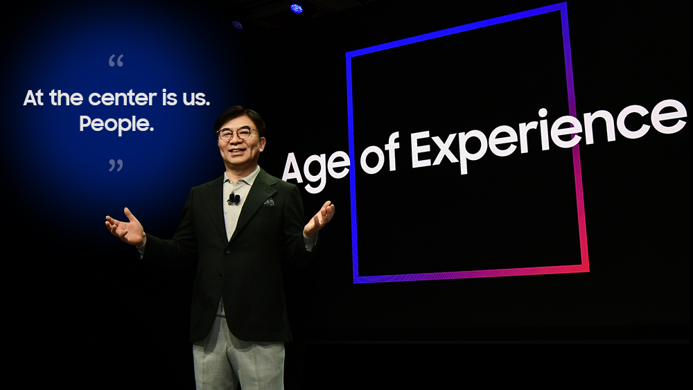

| Home | Sumsung Accessories | |
News & Reviews | Help |
Recapping the Biggest Announcements and Reveals From Samsung’s CES 2020 Keynote
|
|---|
| CES 2020 may have only just begun, but Samsung Electronics has already made one thing abundantly clear: this year’s Consumer Electronics Show (CES) will be one for the ages. “The Age of Experience,” that is.
Samsung kicked off the first CES of a brand-new decade by announcing the beginning of a new era of technology. Over the course of a riveting keynote – led by HS Kim, President and CEO of Consumer Electronics Division, Samsung Electronics – the company introduced a wide range of innovations designed specifically for this new era. With these technologies, the speakers explained, Samsung hopes to enhance our daily lives, homes and cities with more seamless and meaningful experiences – and in doing so, help create a better world for us all. Follow along as we walk you through the biggest moments from Samsung’s unforgettable event. Welcome to the “Age of Experience” |
|  Addressing the tech world and consumers around the globe from the Venetian Hotel in Las Vegas, Kim kicked off the keynote by heralding the beginning of a new age.
|
Introducing New Robotic Life Companions |

|

|
Offering More Personalized Care with Samsung HealthAfterward, Kim yielded the stage to Executive Vice President and Chief Research Scientist of Samsung Research, Sebastian Seung, who introduced enhancements to Samsung Health that leverage AI to offer users more personalized care. After outlining the enhancements, which he described as “the next evolution of the wellness experience,” Seung took a moment to meditate and work on his yoga posture using the Samsung Health app on his Galaxy Watch. Next, Seung discussed Samsung’s efforts to revolutionize digital healthcare by partnering with industry leaders like Kaiser Permanente. To offer the audience more details on the partnership, Seung welcomed the Chief Innovation Officer of Kaiser Permanente Southern California, Dr. Tadashi Ted Funahashi, who introduced one of the most exciting products of the collaboration: HeartWise, a convenient, home-based cardiac rehab program created to help patients recovering from heart surgery. |